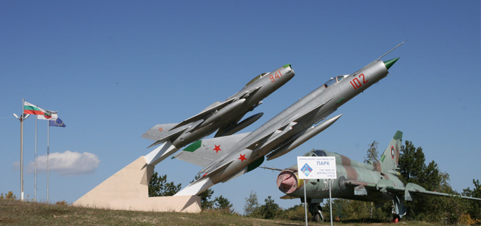
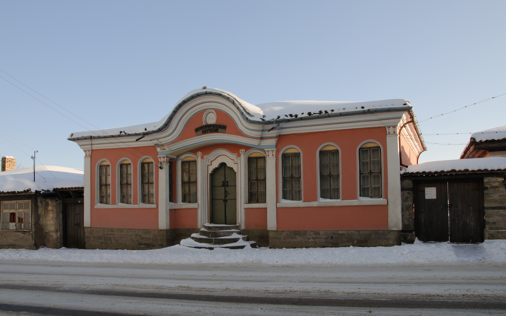
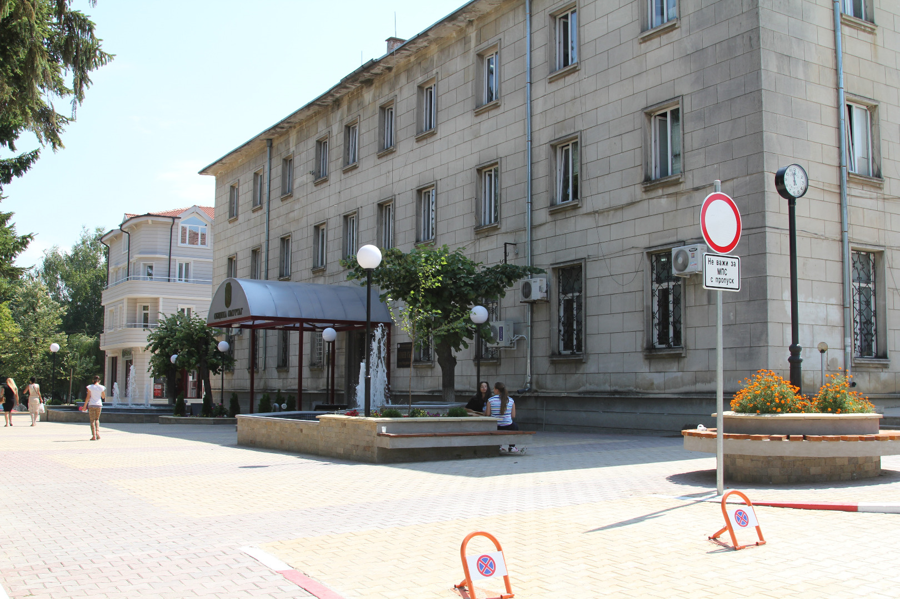

Bulgaria
Омуртаг
Омурта̀г е град в област Търговище, Североизточна България. Той е административен и стопански център на едноименната община Омуртаг. Населението на града към края на 2009 година е 8725 жители, което го прави третото по големина населено място в областта.География
Градът е разположен на 525 метра надморска височина, в областта Сланник (Тозлу̀к), източната част на Предбалкана. Намира се на 24 километра югозападно от Търговище, на 77 километра източно от Велико Търново и на 141 километра южно от град Русе. Омуртаг е кръстовище на важните шосейни транспортни коридори: запад-изток (София-Варна) и север-юг (Русе-Котленски проход-Ямбол и Сливен).История
Първите известни обитатели на района са от новокаменната епоха. С развитието на цивилизацията по българските земи околностите на Омуртаг продължават да привличат заселници. Благоприятните природни условия обуславят наличието на човешки заселници още от 6 век пр.н.е.. Областта е включена в голямата укрепителна система, създадена от византийския император Юстиниан.Осман пазар
Първите писмени свидетелства за днешния град Омуртаг са от 17 век. В турските данъчни регистри той е посочен като център на кааза с името Осман пазар. В икономически план селището става средище на занаятчийското производство и търговията.След Освобождението Осман пазар преживява значителни демографски промени. Турското население се изселва и на негово място идват българи от Трънско и Кюстендилско. Непосредствено след войната районът на Осман пазар е най-активната област на мюсюлмански бунтове, като на 27 юни 1879 година градът е нападнат от турски въоръжени групи, които са отблъснати от военния гарнизон.Градът продължава да бъде средище на икономически и културен живот в областта, център на окръжие, а по-късно – и на околия. През 1934 година градът получава сегашното си име в чест на българския хан Омуртаг.   